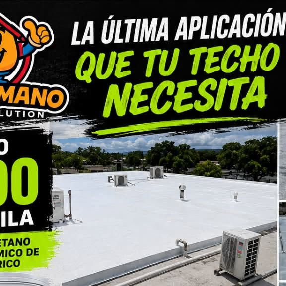
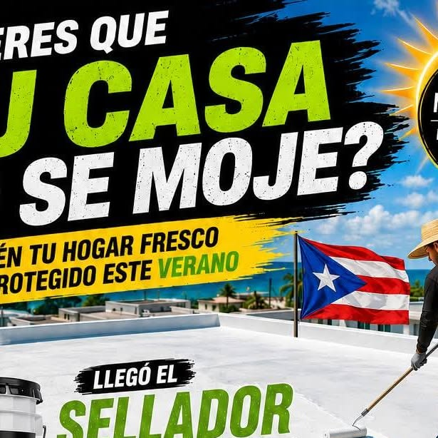

Puerto Rico · Puerto Rico
ESPUMA QUE SELLA, TECHO QUE DURA
Selladores de poliuretano y sellado profesional de techos. Servicio que se siente, durabilidad que se siente.
Puerto Rico · Puerto Rico
Selladores de poliuretano y sellado profesional de techos. Servicio que se siente, durabilidad que se siente.
Lo que hacemos

Sellado completo de techo con lavado a presión, corrección de grietas, primer y sellado.

Aplicación profesional de selladores de poliuretano, la última aplicación que tu techo necesita.

Localizamos y reparamos goteras y filtraciones para que la lluvia no entre más.

Mantenimiento preventivo que alarga la vida de tu techo y protege tu inversión.

Corrección de grietas y preparación de superficie antes de cada sellado.
Galería


Quiénes somos
Preeminent Corp Roofing, de Julio Santiago: sellado de techos, reparación de goteras y filtraciones, y selladores de poliuretano aplicados por profesionales. Servicio que se siente, durabilidad que se siente, en todo Puerto Rico.
Llamar 787-234-9959Preguntas frecuentes
Estamos en Puerto Rico, Puerto Rico.
Sellado de techos con poliuretano y más: Sellado de techos, Selladores de poliuretano, Reparación de goteras.
Escríbenos por WhatsApp al 787-234-9959 o llena el formulario de contacto y te respondemos por WhatsApp.
Sí, síguenos en Instagram como @julio.santiago8.
Selladores de poliuretano y sistemas profesionales para goteras y filtraciones: 787-234-9959.
La espuma que sella
Cuéntanos dónde filtra tu techo y te damos cotización. Servicio que se siente, durabilidad que se siente.
787-234-9959Sellado de techos · @julio.santiago8 · Puerto Rico, Puerto Rico